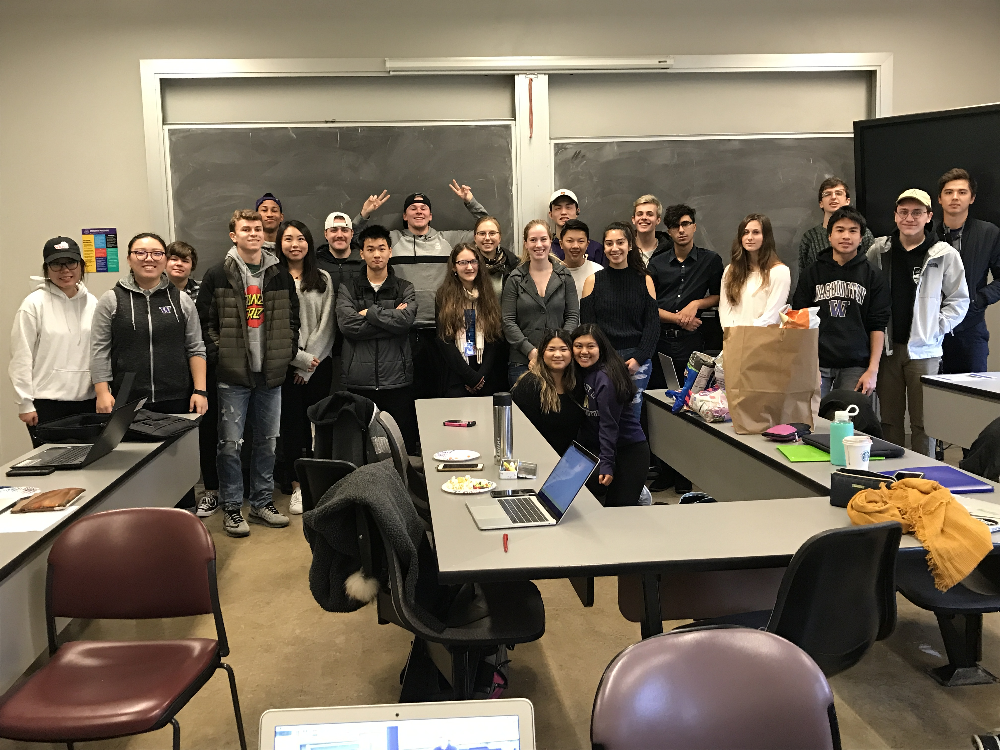
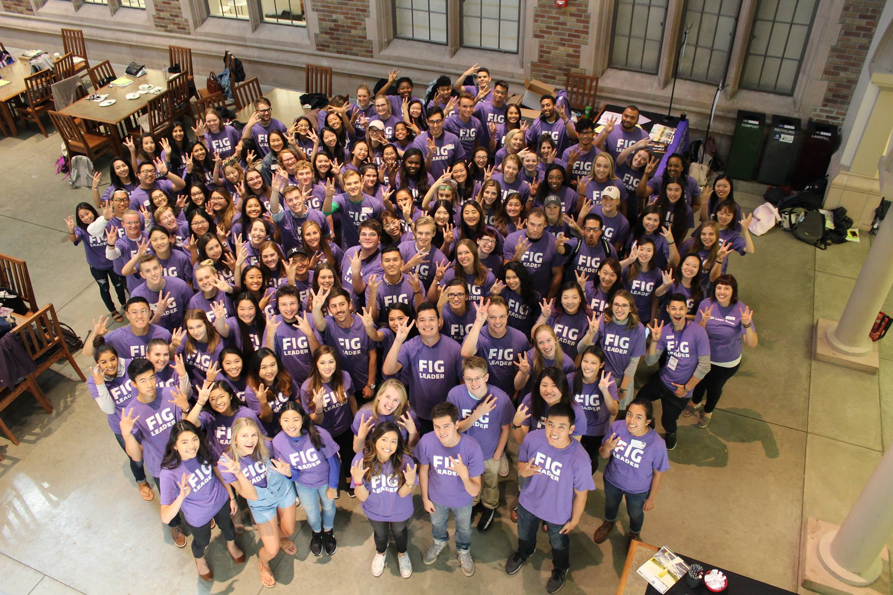
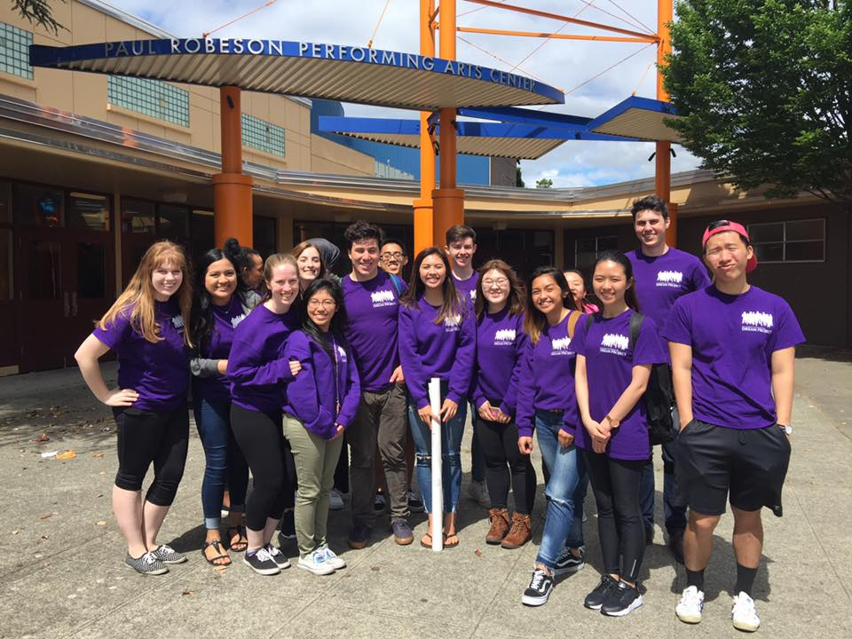
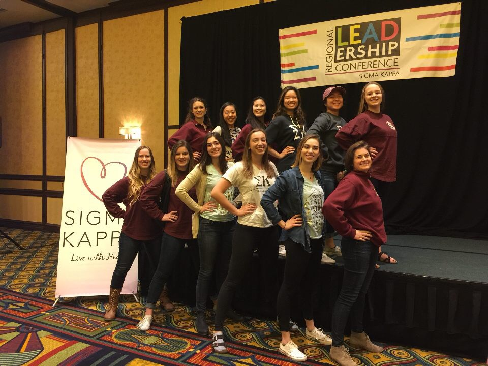

My Husky Story
Christina Fong asked me to take part in a Fail Forward Panel in front of a 200-student sized lecture for the Leadership class that I’m assisting in this quarter. While slightly off-putting, I jumped at the chance for some intense self-reflection and the challenge of sharing my story with two hundred strangers. I have always had a “yes” attitude when new challenges or opportunities come my way. Life is so much more fun the more involved you are, especially when you're doing what you love. This was the same attitude I had coming into UW. Although a school made up of over 30,000 undergraduates was not my first-choice, I was determined to become active in new-found communities.
This task was not as easy as I initially thought. Preparing for my Fail Forward Panel with Christina and Anne Browning, I learned that a majority of UW freshmen are relatively new to failure. Throughout my first year, I was incredibly frustrated with the amount of failure and rejection I encountered. I wanted to find new communities that I could dive into head-first, but was unprepared for receiving my first real rejections. I studied the UW RSO registry. I stopped at every booth I saw on campus. High school leadership was how I found my love for involvement and activism so I applied to the clubs that I identified with most: Greek Leaders, UW Leaders, and so on. After numerous rejections, I started to question my identity as a leader and my self-worth. On top of this, the Greek Community was revealing itself to be more stereotypical than I wanted to believe. Nevertheless, I pushed through and kept trying to get involved. There had to be opportunities out there for me and I was going to find them. Unfortunately, this determination led me to apply for clubs I wasn’t passionate about. Thankfully, I’m too stubborn to let my frustration with my situation muster. When I saw an advertisement for a four-day leadership retreat that wanted to make change within the Greek Community, I was ecstatic. The three pillars of the program are leadership development, building friendships across the community, and honest dialogue about the flaws of the community. I stared at the application for a few days, unsure if I could handle another rejection, especially from something I so badly wanted. With encouragement from my friends, I applied.
Now it’s two years later and I am the Director of the RSO and leading the preparation for the club’s fourth annual retreat this Spring Break. I have since found myself involved in the Husky Experience Student Advisory Committee, Dream Project, Pipeline, the FIG program, New Member Education program for my sorority, and Christina Fong’s “Learning Leadership in Theory and Practice” class and still encountering failure. I’ve thought back to my initial decision to apply for the Greek Community Project retreat and how close I was to not applying because I expected rejection. It’s funny to look back, because I no longer fear rejection, I learn from it. I have become a more resilient person. I also know that this application was so important to me, because it was about creating change within my community. A change that I knew was necessary after only a quarter into my experience. Even after continuous rejections, I couldn’t let my self-doubt stop me from trying to change my community for the better.
ReWa
Days after Trump’s Muslim ban, I noticed an ad for ReWA. I discovered I could volunteer to help a community that was being egregiously attacked. I started volunteering for ReWA in the Fall of 2017 in an after-school program at Maple Elementary. The students I met were truly amazing. I was blown away by the creativity, engagement, and determination these students show. In Political Science classes, we rarely get the opportunity to see first-hand the direct impact these issues have. Pipeline helped direct my passion for social justice and gave me connections to the ReWA students outside of my UW seminar. After the first few weeks of Pipeline I was able to better understand my role as a white woman in a position of power with young children of immigrants.
Pipeline
Pipeline gave me the opportunity to reflect on how my presence and actions impacted the students I volunteered with. Additionally, I was able to participate in deeper conversations about modern social justice issues. As a Political Science major, I am fascinated by social justice issues and our government’s role in society. However, in Political Science, we very rarely get the opportunity to see first-hand the direct impact these issues have. Pipeline helped direct my passion for social justice and gave me connections to students outside of my UW seminar. After the first few weeks of Pipeline I was able to better understand my role as a white woman in a position of power with young children of immigrants.
Dream Project
I have participated in Dream Project intermittently throughout college, whenever it fits in my schedule. With Dream Project students visit high schools and help juniors and seniors with the college application process including navigating CADRs, SAT prep, Financial Aid, and personal statements. The classes cover a lot about social justice issues from Black Lives Matter movement to DACA and how they could be impacting my mentees.
FIG
I am especially proud of my work as a FIG Leader. After being too unsure of myself to apply during my first year, I finally had the confidence to apply for it my Sophomore year. I was incredibly nervous throughout the whole application process, but it was worth it. I felt completely in my element being able to aid UW freshmen in their college transition. I shared my trials and missteps and gave them insider tips on registration, UW’s large campus, and finding the RSOs that are right for them. It was very rewarding to be able to help them find their place and feel more at home at UW.
Greek Community Project
My freshmen year I attended the Greek Community Project’s leadership development retreat and the shortcomings I had seen in the Greek Community were met with involved, caring leaders who helped me strive for change within my own chapter. I was so eager to join this community and find life-long friends and sisterhood, and while I have received more love and support from the members, there are still significant flaws within the community. From black out culture, rape culture, tier systems, and a lack of racial diversity, UW’s Greek Community has a lot to improve upon. Hearing similar stories of struggles with the community have helped motivate me to make a change in my own chapter. The past year I served as the New Member Educator for my sorority and I made it my mission to provide more space for critical dialogue about our community’s flaws in order to help prevent normalizing the unhealthy cultures the community historically produces. It was great to be able to have these serious talks with the New Members and be able to provide them with resources and support for making their own impact on the community.